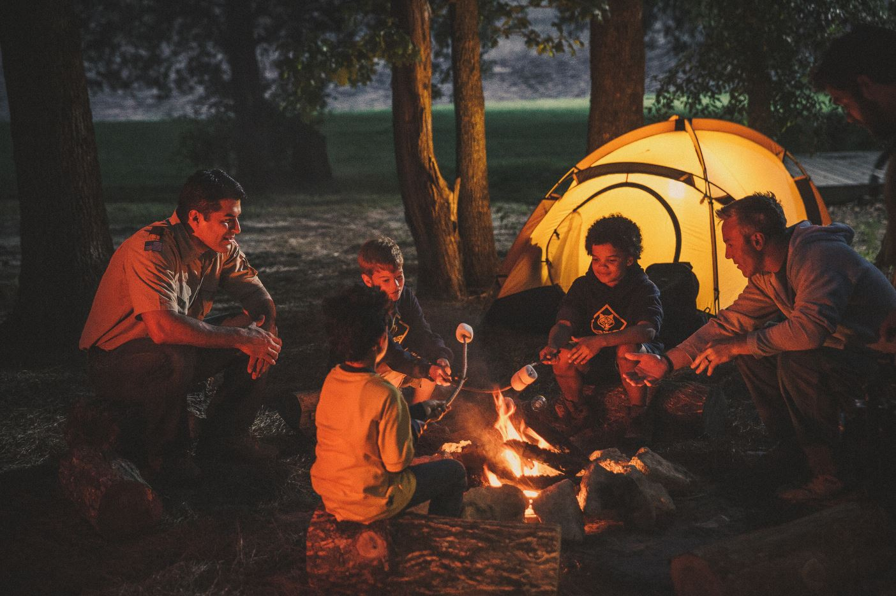
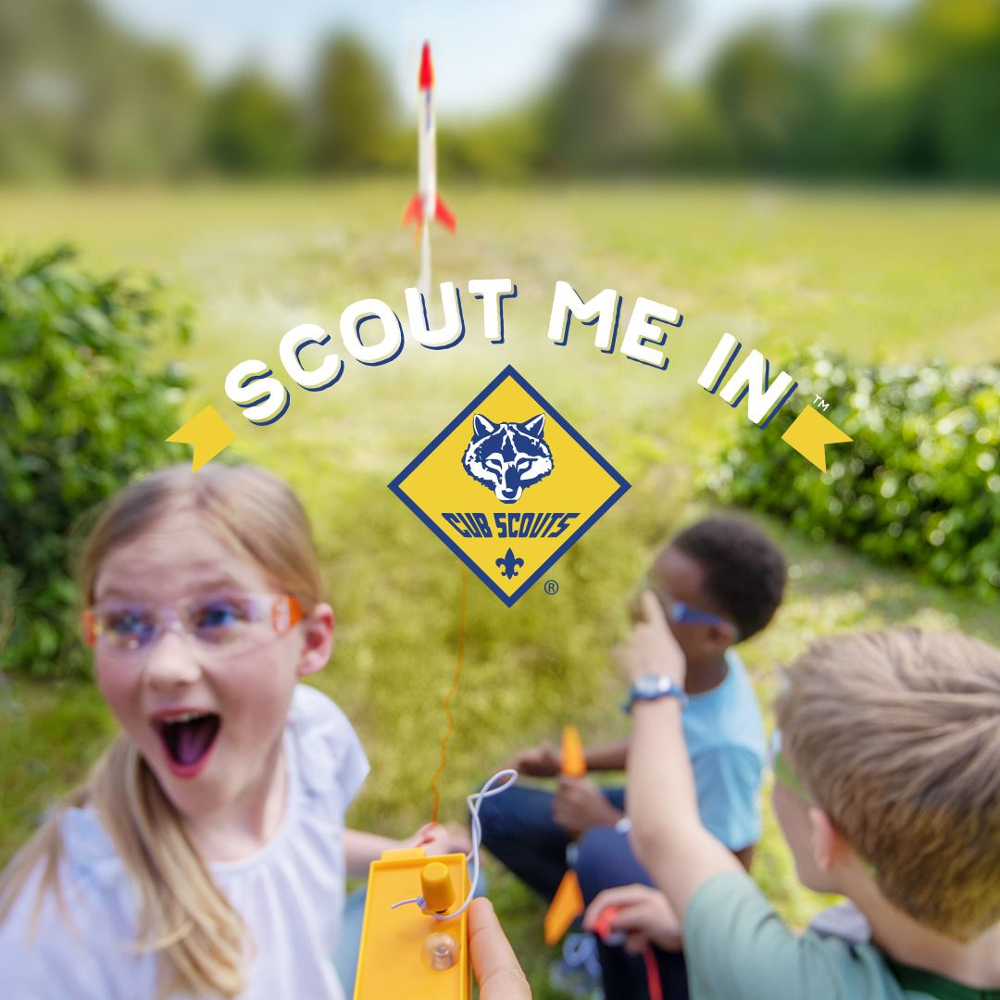
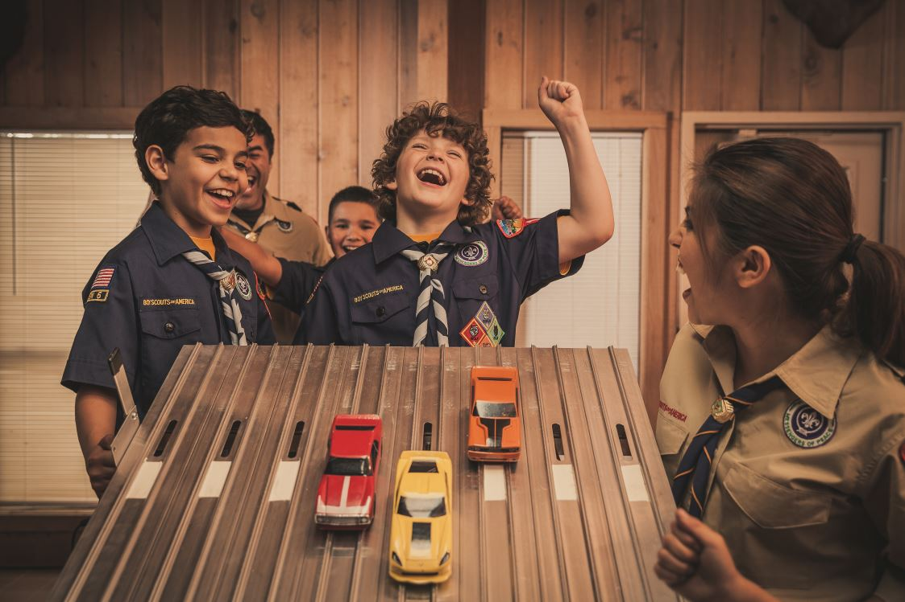

An active and welcoming Cub Scout pack for boys and girls in kindergarten through 5th grade at Cub Run ES, Deer Park ES, and the surrounding Centreville, Virginia area.
Join Us!
We'd love to have you and your family join us on our scouting adventure. Pack 1862 welcomes boys and girls in kindergarten through 5th grade. Check out our frequently asked questions and then register online or request more information.

Current Scouts
We use ScoutBook to manage our roster, advancements, and calendar and to communicate with you. Please login below or let us know if you need to reset your account.

Frequently Asked Questions
Where are you located?
Pack 1862 is located in Centreville, Virginia. We meet at both Cub Run Elementary School and Deer Park Elementary School (and we welcome all scouts from the surrounding area).
What organization charters the pack?
We're officially chartered by the Cub Run Elementary School PTA. We also have a close relationship with the Deer Park Elementary School PTA.
What sorts of activities do you do?
We do all kinds of fun stuff! Here's a sampling:
Camping
The entire pack typically goes on multiple camp outs each year including one in the fall and one in the spring. Many dens also go on camping trips of their own.
Hiking
We enjoy getting outside and seeing what nature has to offer.
Games
Sometimes it's fun to sit down with fellow scouts and enjoy a friendly game.
Biking
We love riding our bikes and participate in the Sully District Bike Rodeo in the summer.
Service
Community service is a big part of scouting, from our yearly Scouting For Food service project to local park cleanups and other activities.
STEAM
We provide lots of opportunities to engage in STEAM: science, technology, engineering, art, and math.
Do you allow girls?
Yes! Pack 1862 supports family scouting and both boys and girls are welcome and encouraged to join.
What ages does my child need to be?
Scouting is based on grade level and each grade level and gender is comprised of smaller units called dens. Pack 1862 has programs from kindergarten through 5th grade. Each scout is given a rank based on their grade level:
Bobcat
The Bobcat badge is earned prior to all other ranks. The Bobcat badge is an introduction to Cub Scouting’s values and some of it’s methods such as the Cub Scout sign.
Lion
The Lion rank is for Scouts who are in kindergarten or the year prior to first grade. To earn the Lion badge, a Scout must complete five required adventures with the den or family.
Tiger
The Tiger rank is for Scouts who are in first grade. At this level, each scout needs an adult partner for each activity. To earn the Tiger badge, a Scout must complete six required adventures with the den or family and one elective adventure of the den or family’s choosing.
Wolf
The Wolf rank is for Scouts who are in second grade. To earn the Wolf badge, a Scout must complete six required adventures and one elective adventure.
Bear
The Bear rank is for Scouts who are in third grade. To earn the Bear badge, a Scout must complete six required adventures and one elective adventure.
Webelos and Arrow of Light
Webelos dens are for Scouts who are in fourth or fifth grade. Webelos Scouts get to work on the five required Webelos adventures and choose two of the 18 elective adventures that are shared by the Webelos and Arrow of Light ranks. The highest rank in Cub Scouting is the Arrow of Light. Earning this rank prepares a Webelos Scout to join a Scouts BSA Troop.
How much are the dues?
Our dues are $160 for the entire program year. That covers supplies, your Pinewood Derby car and Raingutter Regatta boat, our Pack dues to district and council, some food and drink for campouts and activities, and more. We think scouting ranks among the best value-for-money activities you can participate in.
If you need to pay your dues, you can do so by writing a check to "Pack 1862" and giving it to our Treasurer, your Den Leader, or one of the other leaders. You can also pay via Paypal to CubScoutPack1862, but please add $3 to the payment to cover transaction fees.
Is anything expected of parents?
Every household in our pack is required to volunteer in at least one position. Scouting is an adult-participatory activity and it's enriching for you, for your scout(s), and for the unit to have everyone involved. We can't do it without you!
Where can I order cool Pack 1862 gear?
I'm glad you asked! Pack 1862 now has an online store with shirts, bags, and more: https://shop.spreadshirt.com/pack-1862/. Full disclosure: the pack will earn a little bit in fundraising on every sale - that part can’t be turned off (we would set the price at cost if we could).